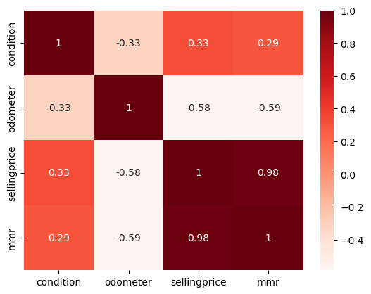

Helen-Nellie Adigwe
Data Analyst Portfolio
Pivoting into data analysis from geology - Skilled in Python, R, SQL, Tableau, and Data Visualization. Connect with me on @hnadigwe
This project involves analyzing car sales data from 2020 to 2023 to determine if there is a pattern to how sales have peaked through out the year and infer if there is a seasonality that can be used to inform Nigerian importers regarding how the Nigeria consumers prioritize affordability and how seasons influence their buying choices.
Dec 4, 2024
The goal of this analysis was to demonstrate using the data to show the pricing dynamics of various vehicle conditions such as age, odometer reading, etc and to compare selling prices to MMR (Manheim Market Report) values, with a regression line to highlight pricing discrepancies..
This project seeks to provide an understanding on how features like brand, age, and mileage affect pricing in other to help importers make informed sourcing decisions.
This project seeks to demonstrate and provide an understanding of how regional price variations across states could be liverages by importers to target cost-effective states for sourcing vehicles..
Dec 4, 2024
The goal of this analysis was to analyze the relationships between key variables — condition, odometer, selling price, and MMR value — using a heatmap to identify correlations that impact pricing decisions for used car imports.

This project involves correlating various variables and using a heatmap to quickly identify which variables have the strongest and weakest relationships. Understanding these correlations helps importers make strategic decisions based on factors like condition, mileage, and price. Also for the purpose of visual clarity, the heatmap provides an intuitive visual summary of the relationships between variables, making it easy to interpret the effects of condition and mileage on pricing.
This project involves analyzing agricultural data from 2020 to 2023 to promote sustainable farming practices and ensure continued growth in agricultural export markets. Key insights from this product analysis aim to help optimize crop yield, improve supply chain efficiency, and increase sustainability in agriculture sectore of the Nigerian economy
This project involves analyzing agricultural data from 2020 to 2023 to promote sustainable farming practices and ensure continued growth in agricultural export markets. Key insights from this port analysis aim to analyze product distribution by destination and identify key export markets whilst also showing port over utilization and areas for development focus in the shipping industry in Nigeria.in agriculture sectore of the Nigerian economy
Nov 27, 2024
This project give us insight into how we can best optimize our export strategies in the coming year by: Reviewing Customer Preferences, Market Competition and Identifying Emerging Trends in the agricultural industry.
This project involves analyzing agricultural data from 2020 to 2023 to promote sustainable farming practices and ensure continued growth in agricultural export markets. Key insights from this OPS Efficiency Analysis aim to make sure Supply Chain is optimized, inventory is well managed and resource allocation is adequatly planned for next year's activities
Merging updates for index.html after resolving conflicts
This project specifically, the aim is to: 1. Track the trends of key housing market indicators, 2. Examine correlations between these factors to understand how they might influence each other, 3. Visualize monthly fluctuations and trends in these key indicators to understand cyclical behaviors, seasonality, and overall market dynamics across the period and 4. Provide insights into how economic and market conditions (as reflected by these variables) could impact the housing market, helping to guide future forecasting or investment decisions:

This project involved working with 2 datasets from kaggle and amazon about music genre. The objective was to gather, analayse and assess the data then merge both before carrying out data analysis for credibility, accuracy, and completeness. The outcome was a heatmap visualization

The `ggplot2` package allows you to quickly create data visualizations that can answer questions and give you insights about your data.

Dashboards Starter Template - Creating Interactive Dashboad with Visualizations
.


{kind=link}